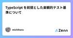
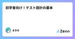
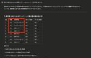
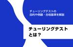

直近1週間の更新
3/9 (日)
テスターちゃん電子ランキング4位と6位＆3月から新連載はじまります テスターちゃん【4コマ漫画】
お久しぶりです。作者です。 テスターちゃん書籍2巻が出てしばらく経ちましたが…… ●25年2月電子書籍ランキング1位は「セキュリティエンジニアの教科書」でした。6位以下⇒マンガ ソフトウェアテスト,インフラエンジ教科, ITアーキテクト,インフラエンジ教科2,クラウドエンジ教科,ゼロトラストアーキテクチャ,詳解Go言語アプリ開発,組込エンジ教科,Pythonテキストマイニン,Filmora pic.twitter.com/AggUmdWQVq — C&R研究所の会社犬ラッキー (@lucky_CandR) 2025年3月3日 なんと4位にランクインしていました！ わーわー！ うれしい！ Xのポ…
1時間前
2年振り２回目のスクフェス福岡でお話ししてきたよ テストする人。
スクラムフェス福岡 | ScrumFest | 2025 スライドはこちらです。 speakerdeck.com 前回登壇したときのスクフェス福岡の内容はこちら underscore42rina.hatenablog.com 去年はちょうど子どもの進学関連で参加できないことがわかっていたので、残念ながら不参加。 そして再来年もその予定になりそうなので、来年もがんばるぞ（気が早い） 登壇のこと 今回はスライドを見ただけでは何もわからないようになっています。 できれば、私のセッションに出てくれた人は思い出せるようなスライドにはしていきたいなという反省はあるけど. 自分の仕事でもできれば絵や図で理解…
1時間前
3/8 (土)
スクラムフェス福岡2025で登壇してきた 天の月
スクラムフェス福岡で登壇してきたので、そのふりかえりをしてこようと思います。 confengine.com 発表した内容(スライドは後ほどアップします) 1本目 2本目 発表準備 1本目 2本目 発表後 1本目 2本目 発表した内容(スライドは後ほどアップします) 1本目 confengine.com 2本目 confengine.com 発表準備 1本目 仕事がバタバタしていたこともあり、こちらは何とかなるだろう精神であまり準備をしていませんでした笑 簡単に進行を決めてリハーサルをして、こんな感じでいけそうだよねというのが確認できたのですが、45分通してリハーサルをするというのは必ずやってお…
11時間前
Mailtrapを利用した開発環境でのメール送信テスト Zennの「Test」のフィード
概要 本記事では、開発環境でメール送信のテストを行う際の課題とその対策について解説します。 実際のメール送信では、セキュリティポリシーの制限や誤認識により、コードの問題か環境依存の問題か判断が難しくなるケースがあります。 そこで、Mailtrapを利用して安全かつ正確にテストメールの送信状況を確認する手順を紹介します。 Mailtrapの紹介 Mailtrapは、テスト用のメールアドレス（例: @example.com）を利用できるサービスです。 料金：無料 クレジットカード登録：不要 ※料金は変更される可能性があるため、使用前に以下を確認してください。 https://ma...
1日前

JaSST’25 Tokyo2日目セッション＋お知らせ ブログ - WACATE
WACATE実行委員 並木です。お知らせしたいことが3つありブログ書きます。 ■お知らせ1JaSST’25 Tokyo 2日目のセッションにてWACATE実行委員会が発表する機会をいただけました。C7）ソフト 続きを読む 投稿 JaSST’25 Tokyo2日目セッション＋お知らせ は WACATE に最初に表示されました。
1日前
Docker 環境で Playwright テスト実行時に「Invalid Host Header」エラーが発生する問題の解決方法 Zennの「Test」のフィード
環境情報 Node.js: v20 Playwright: v1.49.1 Docker Compose webpack-dev-server: v5.1.0 OS: macOS 24.3.0 はじめに 私のプロジェクトでは、フロントエンド環境と Playwright（E2E テスト）環境を別々の Docker コンテナとして分離しています。 分離するアプローチをするとコンテナ間通信の設定が必要になるので、解決方法を紹介します。 システム構成 Docker Compose を使って、以下の 3 つのサービスを含む環境を構築しました： Frontend: Web アプリ...
1日前
超(個人)訳JSTQB Foundation Level シラバス Part5 Zennの「QA」のフィード
はじめに 今回はテスト活動に関するシラバスを読解していく。 引用元について テーマにある通り、ISTQBが提供するFoundation Levelシラバスを引用させて頂く。 1.4 テスト活動、テストウェア、そして役割 テストはコンテキスト次第である。しかし、ハイレベルでは、テスト目的を達成する確率を高くする、汎用的なテスト活動のセットというものが複数ある。これらテスト活動のセットがテストプロセスを構成する。テストプロセスは、多くの要因を考慮して特定の状況に対する適切な調整ができる。テストプロセスの中で、どのテスト活動を、どのように、いつ実施するかは、通常、特定の状況に対す...
1日前
3/7 (金)
スクラムフェス福岡2025 Day1に参加してきた 天の月
www.scrumfestfukuoka.org 今日からはスクラムフェス福岡に参加しているので、Day1の様子と感想を書いていこうと思います。 19:00-の参加だったのでkeynoteなどは聞き逃してしまいました... 佐野さん、平鍋さん、川西さんと話す 佐野さん、チュンさんと話す チュンさん、おーのAさんと話す チュンさん、ちんもさんと話す ちんもさんと話す ちんもさん、おがさわらさんと話す おがさわらさん、じゅんぺーさん、ひろみつさん、moriyuyaさんと話す moriyuyaさん、おがさわらさんと話す 頭取、えいみさん、岡本さん、もりさんと話す 佐野さん、平鍋さん、川西さんと話す …
1日前
ソフトウェアテストのカバレッジ基準を順を追って理解する：Line Coverageから MC/DCまで Zennの「Test」のフィード
ソフトウェア開発におけるテスト手法は似たような名前で非常に混乱します。これらの違いを理解することは、テスト実装時の混乱を避けられる、非テスト担当者への説明をスムーズに行えるなどメリットがあると思います。 今回は、ソフトウェアテストでベーシックな5つのカバレッジ基準について、基本的なものから高度なものへと段階的に確認していきます。これらのカバレッジ基準は、それぞれ前の手法の問題点を補完する形で発展してきました。 Line Coverage だけでは未実行のコードは分かるが、条件分岐のテストが不十分 Branch Coverage では条件のtrue/falseをテストするが、個々の条...
2日前
セミナーメモ（DeNA QA Night 2025/03/05） ソフトウェアテストタグが付けられた新着記事 - Qiita
このページは何？ 2025年3月5日に行われたDeNA QA Nightについて書いたメモです。 トピックや内容、それを受けての所感などを徒然なるままに書いていきます。 Session1:リアルタイ…
2日前
2025.03.07ナレッジNEW SBOMとは?導入メリットや標準フォーマット、種類を解説 この人に聞きました: 株式会社ベリサーブ サイバーセキュリティ事業部 マーケティング部長 武田一城 ... メディア | HQW!
2025.03.07 ナレッジ NEW SBOMとは?導入メリットや標準フォーマット、種類を解説 この人に聞きました: 株式会社ベリサーブ サイバーセキュリティ事業部 マーケティング部長 武田一城 SBOM セキュリティ サイバーセキュリティ 経済産業省 EUサイバーレジリエンス法 CRA ナレッジ
2日前

TypeScript を前提とした楽観的テスト基準について Zennの「Test」のフィード
みなさん、テスト書いてますか？ この記事は「テスト書いてますか？」という質問に「100%書いています」と答えられない私が、 どのような基準でテストを書く／書かないを決めているのかについて書きます。 Q.なぜ書かないのか？ A. TypeScriptで型安全なコードを書いているから。 日頃開発しているアプリでは、おおよそシンプルなmap, filter的な処理がコードの80%以上です。 インフラを意識しない視点では、次のようなデータの流れです。 Prisma でデータを取得（DBから取得したデータに型が付いている） tRPC経由でレスポンス（バックエンドの型情報がフロントで参照できる...
2日前
3/6 (木)
スクラムフェス新潟2025にプロポーザルを出した 天の月
タイトルの通りスクラムフェス新潟にプロポーザルを出したので、今日はその告知です。 出したプロポーザル 1本目 2本目 3本目 プロポーザル概要 1本目 2本目 3本目 プロポーザルを出した背景や想い 1本目 2本目 3本目 出したプロポーザル 1本目 confengine.com 2本目 confengine.com 3本目 confengine.com プロポーザル概要 1本目 色々な事情があり、ドメイン知識が0にもかかわらず業務の難度が高いシステム開発のプロジェクトに突如関わることになった自分は、とりあえず既存のドキュメントや業務の参考書籍を探しますが、まるで見つからない状況に困惑すること…
2日前
テスト記事 (2025/03/06版) Zennの「Test」のフィード
テスト記事 これはZenn-Qiita同期ツールのテスト用に作成した記事です。 特徴 Zenn形式で書いた記事を Qiita形式に自動変換 GitHub Actionsで同期 コードサンプル console.log("Hello, World!"); まとめ この記事はテスト用です。正常に同期されていれば、Qiitaにも同じ内容が投稿されているはずです。
3日前
dio & mockitoでテストコードを書く Zennの「Test」のフィード
ライブラリを使用してテストを書く dioだと専用のライブラリを使用するとテストコードを書きやすくなるのだが、どうやらもうメンテナンスされていないようだ🤔 https://pub.dev/packages/http_mock_adapter/example なので案件でも使用することのあったmockitoを使ってみた。 https://pub.dev/packages/mockito https://pub.dev/packages/dio https://pub.dev/packages/build_runner pubspec.yamlにモジュールを追加してみよう。 name: f...
3日前
3/5 (水)
yr-learning Vol57に参加してきた 天の月
yr-learning Vol57 - connpass こちらのイベントに参加してきたので、会の様子と感想を書いていこうと思います。 作ったコミット イミュータブルオブジェクト 初期手札 ターン交代 TODO作成 作ったコミット github.com g github.com ithub.com github.com github.com github.com イミュータブルオブジェクト まずはオブジェクトがミュータブルなのが気になるね、という話をしてきました。 ただ、現段階では投資対効果が低い修正になるので、一旦手札の概念を確認するよなテストを作っていこうという話になりました。 初期手札 …
4日前
DevOpsが機能する組織づくりの実践知 (Agile in Motion vol.4) SHIFT EVOLVE グループの新着イベント
開催日時: 2025/03/17 19:30 ～ 20:50<br />開催場所: オンライン<br /><br /><h2>DevOpsが機能する組織づくりの実践知 (Agile in Motion vol.4)</h2> <p>アジャイルではどうやって品質を担保したらいいのか？</p> <p>品質にこだわってきたSHIFTならではの目線で、アジャイルに長年携わってきたゲストを招き、アジャイルの神髄に迫る Agile in Motionシリーズ。</p> <p>今回は、DevOpsやアジャイルの研修を数多く提供しているITプレナーズとの共催で、DevOpsが機能する組織づくりについて考えます。北國銀行の岩間氏には、DevOpsな組織を目指し奮闘しつづけてきた具体的な成功事例を共有していただきます。そして、組織づくりの支援を数多く手がけてきたガオリュウ氏とSHIFTの船橋が、様々な組織での事例を提示しあい、ディスカッションを盛り上げます。</p> <h2>Contents</h2> <h3>Lightning Talks</h3> <p>①『銀行でDevOpsを進める理由と実践例』岩間...
4日前
2025.03.05ビジネスNEW 【連載】品質をめぐる冒険:中央大学・中條武志教授「顧客のニーズをつかむのも満たすのも人であり、人を抜きに品質管理は語れない」 中央大学 理工学部ビジネスデータ... メディア | HQW!
2025.03.05 ビジネス NEW 【連載】品質をめぐる冒険:中央大学・中條武志教授「顧客のニーズをつかむのも満たすのも人であり、人を抜きに品質管理は語れない」 中央大学 理工学部ビジネスデータサイエンス学科 教授 中條武志 品質管理 行動科学 品質 顧客ニーズ 組織論 人材教育 組織文化 ソリューション 品質をめぐる冒険
4日前
3/4 (火)
大人のソフトウェアテスト雑談会 #254【あられ】に参加してきた 天の月
https://ost-zatu.connpass.com/event/347489/ 今週もテストの街葛飾に行ってきたので、会の様子と感想を書いていこうと思います。 AI系会社の成長 コンパウンドスタートアップ A3 予定がおかしい 全体を通した感想 AI系会社の成長 最近はCursorがすさまじい勢いで伸びているという話から、生成AI系はレッドオーシャンだし、売上の上限が決まっているのでなかなかきついな、という話が出ていました。 コンパウンドスタートアップ 1製品があまり売れていない中でコンパウンドと言い出すのはやめたほうがいいという話がありました。こういった企業は、途中から自分たちはコン…
4日前
【個人メモ】こんなQAチームを作ってみたい ソフトウェアテストタグが付けられた新着記事 - Qiita
アジャイル開発においてQAが上流から効率的に関わるための体制案を書いてみる。 【課題】 現状のQAチームでは上流（企画・デザインなど）に対するアクションはあるものの 下流（テスト）も含めて全員がカバ…
5日前
テスト技法入門～ペアワイズ法～ Zennの「QA」のフィード
はじめに はじめまして！ Rehab for JAPAN QAエンジニアの山田です。 今後、QAエンジニアとして活動していく中での課題解決に向けた取り組やテスト技法など、 様々なことをブログを通して発信できればと思っています。 今回はテスト技法のご紹介として、組合せテスト技法の1つである 「ペアワイズ法」（オールペア法とも呼ばれている）についてご紹介させていただきます。 ターゲット 本記事のターゲットは以下です。 QAエンジニア歴1～2年目の方 テストケース数が膨大になってしまい、困っている方 テスト技法について学びたい方 ペアワイズ法とは ペアワイズ法（Pa...
5日前

何を品質と定義するか、部署を越えて言語化していきたい── SmartHR品質保証部チーフ座談会 4QA - SmartHR Tech Blog
4QA - SmartHR Tech Blog
品質保証部のチーフ（プレイングマネージャー）と聞くとどういった仕事を思い浮かべるでしょうか。 いわゆる「リソース管理」を想像する方もいらっしゃるかもしれません。それも在り方のひとつですが、SmartHRのチーフの役割は少し異なります。 この記事では、SmartHRの品質保証部でチーフを務める3名へのインタビューを通じて、役割と期待される成果を紐解いていきます。 インタビュアーは品質保証部マネージャーのtarappoさん（@tarappo）です。tarappoさんについては以下の記事をぜひご覧ください。 tech.smarthr.jp 目次 自己紹介、チーフ就任の経緯 品質保証部のチーフは何をす…
5日前
「単体テストの考え方/使い方」勉強会03 〜単体テストの3つの手法〜 Zennの「Test」のフィード
Specteeでエンジニアをしている永野、峯田、和山、國久です。 今回は社内輪読会で読んだ書籍「単体テストの考え方/使い方」から、単体テストの3つの手法についてまとめました。 本記事は数回に分けて輪読会参加メンバーが執筆しています。 前回の記事（モックの概要・使いどころ）はこちら。 https://zenn.dev/spectee/articles/spectee-unit-test-mock 単体テストの3つの手法 単体テストには次の3つの手法があります。 出力値ベーステスト 状態ベーステスト コミュニケーションベーステスト 以下でそれぞれの手法について説明していきます。 ...
5日前
3/3 (月)
スクラム祭りの打ち合わせ(27回目)をしてきた 天の月
aki-m.hatenadiary.com こちらの打ち合わせをしてきたので、会の様子と感想を書いていこうと思います。 ロゴ Confengineを作る WixのSEO設定 Discordのユーザーロール ロゴ スタッフのご家族がロゴをデプロイしてくださったので、Xの画像を変えるとともに、Confengineのロゴもリニューアルしました。 ロゴが入るだけでだいぶ雰囲気が出て素晴らしい感じになったので、やはりロゴは大切だなあというのを感じるとともに、ロゴを作り切るデザイン力に感嘆していました。 Confengineを作る confengine.com Confengineをひたすら作っていきまし…
5日前

初学者向け！テスト設計の基本 Zennの「Test」のフィード
🛠️ 初学者向け！テスト設計の基本 ソフトウェア開発において、テスト設計 はとても重要です。バグを減らし、システムの品質を向上させるために、適切なテスト設計を行いましょう！この記事では、初心者にも分かりやすく、テスト設計の基本を解説します。✨ ✅ テスト設計とは？ テスト設計（Test Design） とは、ソフトウェアの品質を確保するために、どのようにテストを行うかを計画・設計するプロセス です。 🎯 テスト設計の目的 バグの早期発見 🐞 品質の向上 🚀 開発コストの削減 💰 ユーザー満足度の向上 😊 テストを適切に設計することで、開発の効率もアップします！ ...
5日前

テスト設計に生成AIを用いるときの注意点（2025年版） 5ブロッコリーのブログ
はじめに 「生成AIをテスト設計で用いた事例が出てきてますが、使う際に注意が必要だと思っています。」という言葉から始めた連続ポストをX上に行った*1のですが、しっかりと記録を残した方が良いと感じたので、本記事を書いています。 ちなみに、一昨年にも生成AIのテスト設計への活用について書いてます。 nihonbuson.hatenadiary.jp 本記事で伝えたいこと 結論は以下の2点です。 生成AIはシレッと嘘を混ぜてくるので、それを見極める力が必要 直交表を用いたテスト設計は苦手？ 目次 はじめに 本記事で伝えたいこと 目次 前提 今回の題材 題材となる記事 言及の対象部分 因子間の組み合わ…
6日前
【1200万MAU】基盤システム刷新プロジェクトのQA戦略と実践（後編） 1Zennの「QA」のフィード
はじめに UbieでQAエンジニアをしているMayです。Ubieは「テクノロジーで人々を適切な医療に案内する」をミッションに、AI問診エンジンや医療プラットフォームを提供しています。 本記事では、toCサービスの基盤システム刷新プロジェクトにおけるQAプロセス、特にテスト戦略とリリース計画に焦点を当て、開発の裏側を紹介しています。 このリプレイスは、既存機能の維持と品質確保が最重要課題でした。そこで前編では、クロスファンクショナルなスクラムチームで、①リスクストーミングによるリスク可視化、②テストレベルと責務の定義による品質保証体制の構築、③段階的リリース計画とMVP開発による早期の...
6日前
【1200万MAU】基盤システム刷新プロジェクトのQA戦略と実践（後編） 1Zennの「Test」のフィード
はじめに UbieでQAエンジニアをしているMayです。Ubieは「テクノロジーで人々を適切な医療に案内する」をミッションに、AI問診エンジンや医療プラットフォームを提供しています。 本記事では、toCサービスの基盤システム刷新プロジェクトにおけるQAプロセス、特にテスト戦略とリリース計画に焦点を当て、開発の裏側を紹介しています。 このリプレイスは、既存機能の維持と品質確保が最重要課題でした。そこで前編では、クロスファンクショナルなスクラムチームで、①リスクストーミングによるリスク可視化、②テストレベルと責務の定義による品質保証体制の構築、③段階的リリース計画とMVP開発による早期の...
6日前

2025.03.03ナレッジNEW チューリングテストとは?目的や例題・合格基準を解説 チューリングテスト AI LLM 生成AI ChatGPT GPT-4 中国語の部屋 ナ... メディア | HQW!
2025.03.03 ナレッジ NEW チューリングテストとは?目的や例題・合格基準を解説 チューリングテスト AI LLM 生成AI ChatGPT GPT-4 中国語の部屋 ナレッジ
6日前
3/2 (日)
2025年2月のふりかえり 天の月
2025年2月が終わったのでふりかえりをしていきます。 仕事 社外活動 プライベート 仕事 今月も引き続き忙しい月でした。 楽しみにしていたプロジェクトがスタートしたのですが、やはりスタートというものはだいぶバタバタするもので、やることや課題が大きいものから細かいものまでどんどん出てきて、ほとんどの時間を仕事に割くことになりました。割と体力があることもあって持続可能性がどれくらいあるのかという判断はいつも難しいのですが、脈拍が平均よりやや高めな時期もあったので、少し休んだほうが良いのかな？とは思う場面もありました(その日にゆっくり睡眠をとって今は正常範囲に戻りました) 楽しかったのは、プロセス…
6日前
テスト花見2025開催のお知らせ ブログ - WACATE
こんにちは、杞憂です。 3月に入り、冬の終わりを感じさせるような暖かい日が続いていて、昨日なんかは半袖でも過ごせるくらいでした。 さて、冬が終わるということは、その次は何が始まるのでしょうか……   続きを読む 投稿 テスト花見2025開催のお知らせ は WACATE に最初に表示されました。
7日前